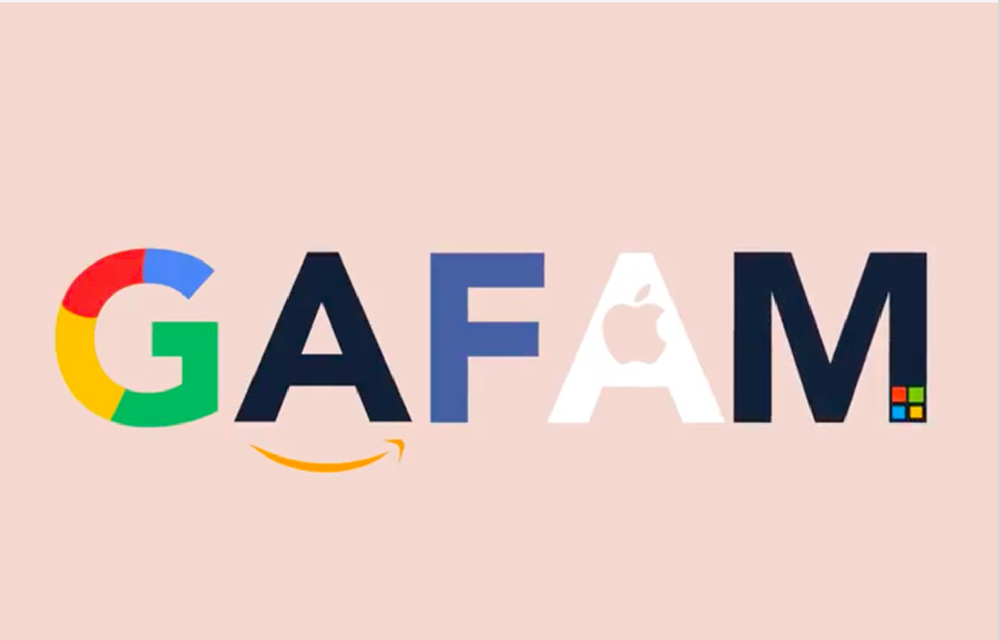

Six mois a peine après l’avènement de la 3G dans l’ile, plusieurs centaines de cubains mènent campagne sur twitter pour réclamer des coûts de connexion plus raisonnables. Sous le hashtag #Bajenlospreciosdeinternet (qui signifie baissez les prix d’internet, en français), ils s’insurgent contre les tarifs pratiqués par l’opérateur public Etecsa, qui jouit du monopole dans le pays.
Alors que le salaire mensuel moyen s’établit a environ 30 CUP (près de 27€), les forfaits a l’internet mobile coûtent jusqu’à une trentaine de pesos cubain par mois. Le dévoilement de bornes wifi n’est pas non plus la panacée. Comptez 1 CPU de l’heure pour y accéder. « Et si tu veux te connecter au Net chez toi avec ton ordinateur 24h sur 24 et 7j sur 7, tu dois payer l’équivalent de 800 CPU par mois, car il n’y a pas de forfait comme dans le reste du monde », s’insurge Norges Rodriguez, coordinateur du blog high tech yucabyte.org cité par l’AFP
Oui, depuis une quinzaine d’années, nous sommes entourés de couches technologiques qui nous protègent. Ces systèmes nous identifient, personnalisent les contenus qu’ils nous adressent ou filtrent nos centres d’intérêts. Ils aménagent un cocon douillet favorisant une forme douce et continue d’asservissement. La preuve : même à l’autre bout du monde, en voyage, les gens restent scotchés à l’interface familière de leur smartphone.
Nous vivons dans un continuum permanent avec notre environnement de tous les jours, il n’y a plus de place pour l’absence. Mais c’est dans le rapport a soi que la révolution numérique provoque un bouleversement d’une intensité inégalé. Aujourd’hui, un adolescent doit se construire dans un monde hyper concurrentiel de compétition d’ego. S’il n’est pas visible en ligne, il va vite être marginalisé.
Ni Apple ni Google ne vous obligent à acheter un smartphone ou à vous connecter à leurs services. Au fond, vous êtes libres. Mais ils mettent à disposition, de façon insistante et fort intelligente, un ensemble d’applications qui conduisent à vous auto-aliéner dans ce que j’appelle un « self-service ». Parce que c’est vous qui activez le mécanisme, in fine. William Burroughs, écrivain de la Beat génération, affirmait que la drogue était le produit le plus abouti du capitalisme, parce quelle possède cette faculté d’auto addiction. La technologie contemporaine va plus loin.
Je le crois, regardez Facebook, qui veut instaurer sa propre monnaie. Avec le libra, c’est son nom, Mark Zuckerberg provoque les États dans ce qu’ils ont de plus fondamental dans leurs prérogatives régaliennes? Mais même sans ça, quand on constate la faculté des géants du numérique à échapper a la fiscalité, on s’aperçoit qu’ils fonctionnent deja comme des pays indépendants.